S39 — How Do Vaccines Train Your Body?
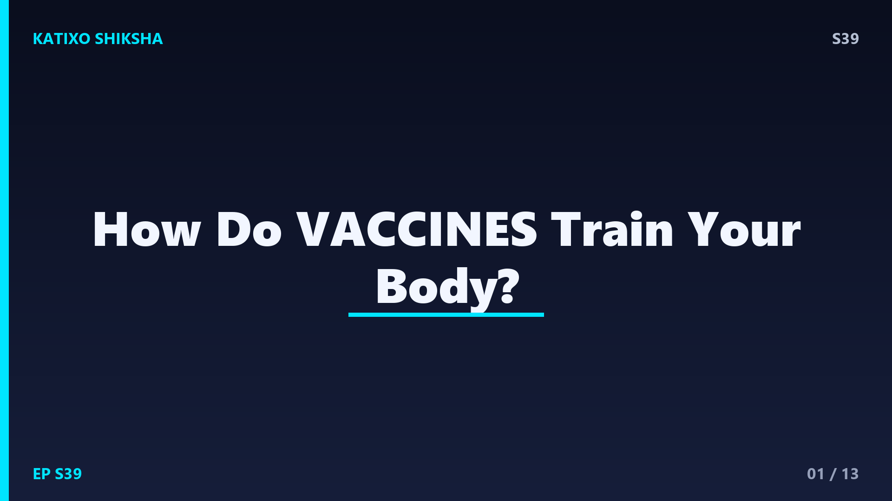
Slide 1दोस्तों, सोचो एक ऐसी छोटी सी सुई जो तुम्हारे शरीर में एक तरह की मॉक ड्रिल, यानी नकली अभ्यास युद्ध करवा देती है, ताकि असली बीमारी आने से पहले तुम्हारी सेना तैयार हो जाए! ये कमाल करती हैं vaccines, यानी टीके। इन्हीं की वजह से smallpox जैसी ख़तरनाक बीमारी पूरी दुनिया से ख़त्म हो गई। पर सवाल ये है, एक छोटी सी सुई आख़िर हमारे शरीर को बीमारी से लड़ना सिखाती कैसे है? आज Katixo KhojLab पर हम खोलेंगे vaccines का पूरा राज़, और समझेंगे हमारे शरीर की अपनी फौज को। चलो शुरू करें!
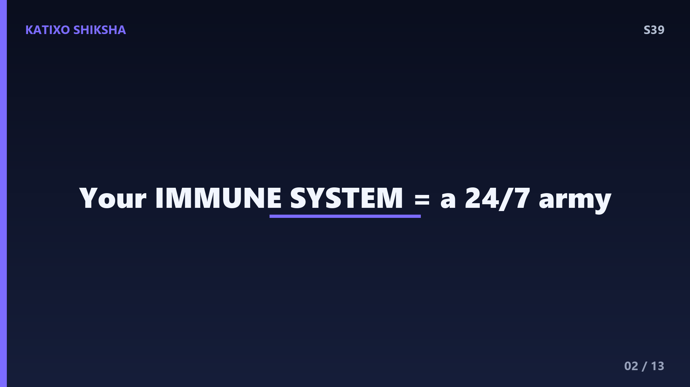
Slide 2vaccine समझने से पहले, हमें अपने शरीर की फौज को जानना होगा, जिसे कहते हैं immune system, यानी रोग प्रतिरोधक तंत्र। ये एक 24 घंटे काम करने वाली सेना है जो हर पल germs से लड़ती है। जब कोई बाहरी दुश्मन, जैसे virus या bacteria, हमारे शरीर में घुसता है, तो immune system उससे जंग छेड़ देता है। इस दुश्मन को कहते हैं pathogen, यानी रोगाणु। हमारे खून में मौजूद white blood cells इस फौज के सैनिक हैं। तो दोस्तों, असली ताकत vaccine में नहीं, बल्कि हमारे अपने शरीर की इसी अद्भुत फौज में छुपी है।
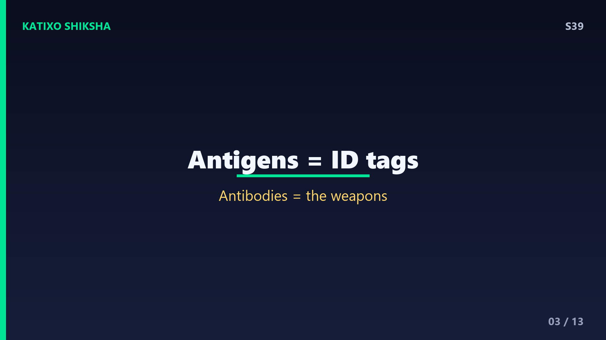
Slide 3अब समझो दुश्मन की पहचान कैसे होती है। हर pathogen की सतह पर कुछ खास निशान होते हैं, जैसे उसकी वर्दी या पहचान पत्र। इन्हें कहते हैं antigens. हमारे immune system के खास सैनिक इन्हीं antigens को देखकर पहचानते हैं कि ये दुश्मन है। फिर शरीर बनाता है एक खास हथियार, जिसे कहते हैं antibodies, यानी प्रतिरक्षी। ये antibodies बिलकुल ताले की चाबी की तरह उस खास antigen पर फिट हो जाते हैं और दुश्मन को पकड़कर बेकार कर देते हैं। हर बीमारी के लिए अलग antigen, और इसलिए अलग antibody चाहिए, दोस्तों।
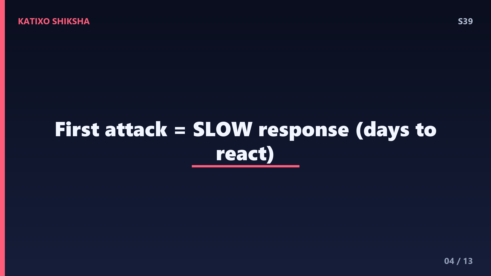
Slide 4पर एक दिक्कत है दोस्तों। जब कोई नया pathogen पहली बार हमला करता है, तो हमारे शरीर को सही antibody बनाने में कई दिन लग जाते हैं। इतनी देर में दुश्मन शरीर में फैल सकता है और हमें बीमार कर सकता है। ये पहली जंग धीमी और मुश्किल होती है, क्योंकि शरीर को दुश्मन का बिलकुल अंदाज़ा नहीं होता। बिलकुल वैसे जैसे कोई नई फौज पहली बार बिना तैयारी के युद्ध लड़े। यही वो कमज़ोरी है जिसका फ़ायदा बीमारियाँ उठाती हैं। और यहीं पर हमारी असली हीरो, vaccine, खेल बदल देती है।
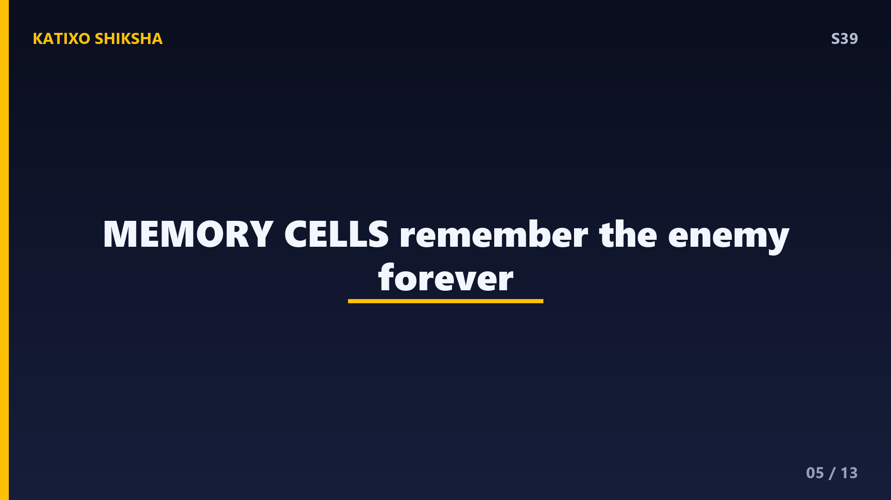
Slide 5अब आता है असली जादू, immune memory, यानी शरीर की याददाश्त! जब कोई जंग ख़त्म होती है, तो हमारे शरीर के कुछ खास सैनिक उस दुश्मन को हमेशा के लिए याद रख लेते हैं। इन्हें कहते हैं memory cells. ये एक तरह का जासूसी रिकॉर्ड रखते हैं कि दुश्मन कैसा दिखता था। अब अगर वही pathogen दोबारा कभी हमला करे, तो ये memory cells तुरंत पहचान लेते हैं और चंद घंटों में ही ढेर सारे antibodies बना देते हैं। इतनी तेज़ी से कि बीमारी फैलने का मौका ही नहीं मिलता! यही memory ही vaccines का दिल है, दोस्तों।
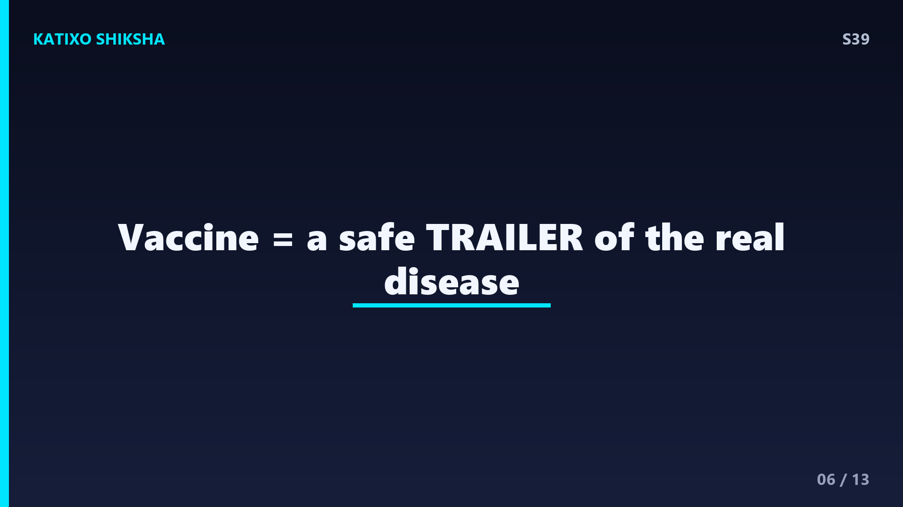
Slide 6तो vaccine करती क्या है? बहुत simple, दोस्तों! Vaccine हमारे शरीर को असली बीमारी का एक नकली trailer दिखाती है। इसमें होता है pathogen का कमज़ोर या मरा हुआ रूप, या सिर्फ उसका वो antigen वाला हिस्सा, जो बीमारी नहीं फैला सकता पर पहचान करवा सकता है। जब ये vaccine शरीर में जाती है, तो immune system इसे असली दुश्मन समझकर antibodies बनाता है, और सबसे ज़रूरी, memory cells भी बना लेता है। पर मज़े की बात, तुम बीमार नहीं पड़ते, क्योंकि ये असली ख़तरनाक germ नहीं था। ये तो बस एक सुरक्षित अभ्यास था!
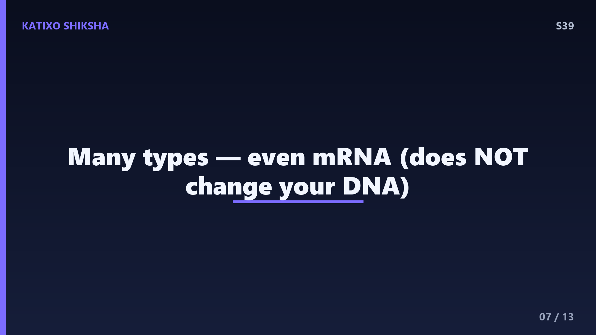
Slide 7vaccines कई तरह की होती हैं, दोस्तों। कुछ में होता है बहुत कमज़ोर किया हुआ ज़िंदा germ, जैसे measles का टीका। कुछ में होता है पूरी तरह मरा हुआ germ, जैसे कुछ polio vaccines. कुछ में germ का सिर्फ एक छोटा हिस्सा या protein होता है। और एक नई तकनीक है mRNA vaccine, जो COVID में बहुत famous हुई। ये हमारे cells को सिर्फ एक recipe देती है, ताकि वो खुद थोड़ा सा antigen बनाएँ और immune system उसे पहचानना सीख ले। ध्यान रहे, mRNA हमारे DNA को बिलकुल नहीं बदलती, ये एक आम ग़लतफ़हमी है।
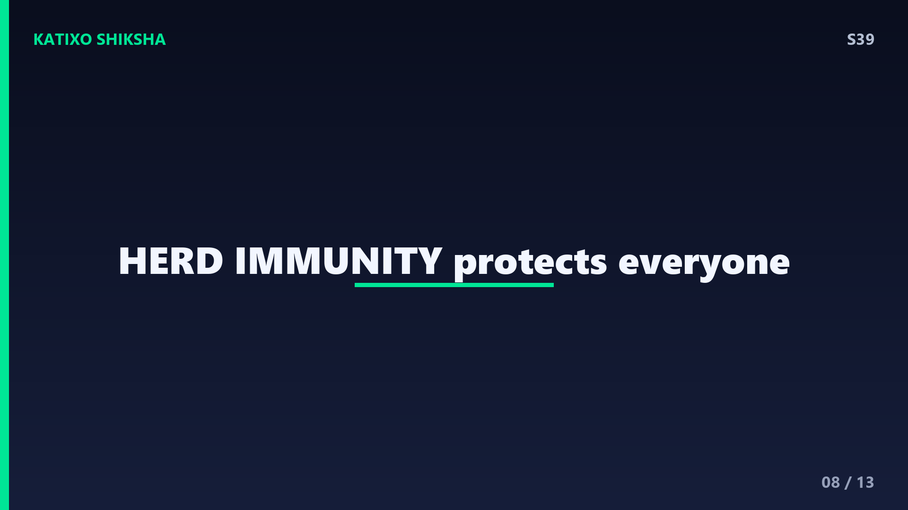
Slide 8अब एक बहुत ताकतवर idea, herd immunity, यानी सामूहिक प्रतिरक्षा। जब किसी इलाक़े में ज़्यादातर लोगों को vaccine लग जाती है, तो बीमारी को फैलने के लिए रास्ता ही नहीं मिलता, क्योंकि हर इंसान एक दीवार बन जाता है। इससे वो लोग भी सुरक्षित हो जाते हैं जिन्हें किसी वजह से टीका नहीं लग सकता, जैसे बहुत छोटे बच्चे या बीमार लोग। यही ताकत है दोस्तों कि जब पूरा समाज मिलकर टीका लगवाता है, तो पूरी आबादी बच जाती है। इसी सामूहिक ताकत की वजह से smallpox 1980 में दुनिया से पूरी तरह ख़त्म हो गई!
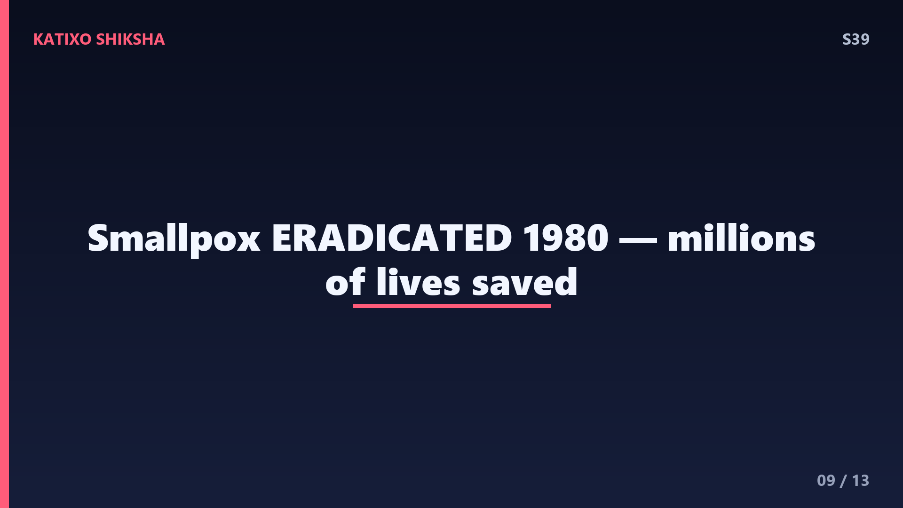
Slide 9vaccines ने इतिहास बदल दिया है, दोस्तों। दुनिया की पहली vaccine 1796 में Edward Jenner ने smallpox के लिए बनाई थी, और तब से अब तक vaccines हर साल लाखों जानें बचा रही हैं। Polio, जो कभी बच्चों को हमेशा के लिए अपंग कर देती थी, आज भारत समेत ज़्यादातर दुनिया से ख़त्म हो चुकी है। हाँ, कभी-कभी टीके के बाद हल्का बुखार या हाथ में दर्द हो सकता है, पर ये तो बस इस बात का सबूत है कि तुम्हारा immune system अपनी training कर रहा है! ये असल में एक अच्छी निशानी है, घबराने की कोई बात नहीं।
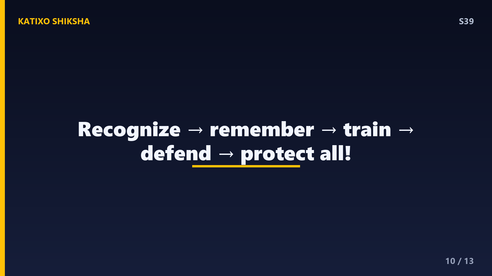
Slide 10तो चलो पूरी कहानी एक साथ जोड़ें। हमारे शरीर में है immune system नाम की फौज, जो pathogen के antigens को पहचानकर antibodies बनाती है। पहली बार इसमें देर लगती है, पर शरीर memory cells बनाकर दुश्मन को याद रख लेता है। Vaccine इसी memory का फ़ायदा उठाती है, वो शरीर को germ का सुरक्षित नकली रूप दिखाकर बिना बीमारी के training करवा देती है। फिर जब असली दुश्मन आता है, तो शरीर पलक झपकते लड़ जाता है! और जब सब टीका लगवाते हैं, तो herd immunity से पूरा समाज बच जाता है। कितना शानदार system है ना? अब चलो test करें!
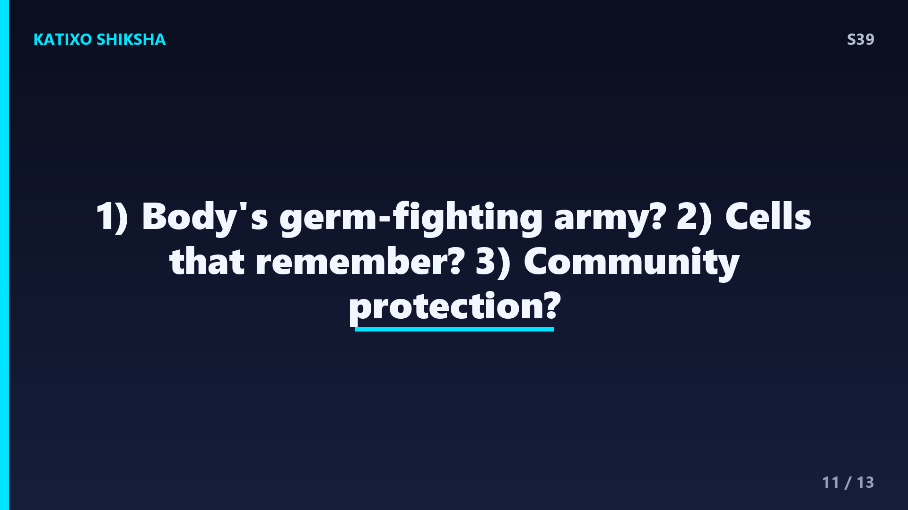
Slide 11Quick brain check! दोस्तों, तीन सवाल हैं, ध्यान से सोचो। पहला, हमारे शरीर की वो फौज जो germs से लड़ती है, उसे क्या कहते हैं? दूसरा, शरीर के वो खास सैनिक जो किसी दुश्मन को हमेशा के लिए याद रखते हैं, और जिनकी वजह से vaccines काम करती हैं, उन्हें क्या कहते हैं? और तीसरा, जब किसी इलाक़े में ज़्यादातर लोग टीका लगवा लें और बीमारी फैल ना सके, उस सुरक्षा को क्या कहते हैं? अब video pause करो, सोचो, और जवाब लिखो। तैयार हो? बहुत बढ़िया! चलो सही जवाब देखते हैं।
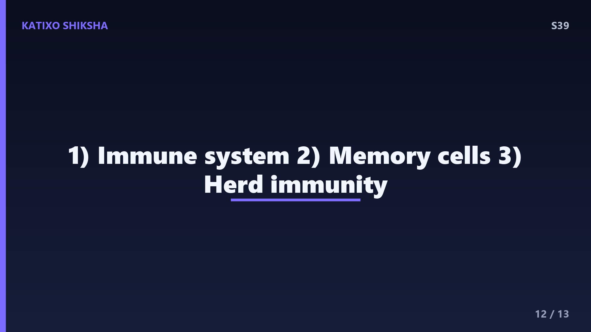
Slide 12तो दोस्तों, जवाब मिलाते हैं! पहला जवाब, germs से लड़ने वाली हमारे शरीर की फौज को कहते हैं immune system, यानी रोग प्रतिरोधक तंत्र। दूसरा जवाब, दुश्मन को हमेशा याद रखने वाले सैनिक हैं memory cells, और इन्हीं की वजह से vaccines हमें लंबी सुरक्षा देती हैं। और तीसरा जवाब, जब ज़्यादातर लोग टीका लगवाने से पूरी आबादी सुरक्षित हो जाती है, उसे कहते हैं herd immunity, यानी सामूहिक प्रतिरक्षा। अगर तीनों सही हुए, शाबाश दोस्तों! तुम्हारा दिमाग तो किसी doctor जैसा तेज़ है। चलो आख़िरी slide पर चलें।
Slide 13तो आज हमने सीखा, vaccines कोई जादू नहीं, बल्कि हमारे immune system की होशियारी का इस्तेमाल है। टीका शरीर को germ का सुरक्षित नकली रूप दिखाता है, जिससे शरीर antibodies और memory cells बनाता है, बिना बीमार हुए। फिर असली बीमारी आने पर शरीर तुरंत लड़ जाता है, और herd immunity से पूरा समाज बच जाता है। इसीलिए दोस्तों, vaccines विज्ञान के सबसे बड़े तोहफ़ों में से एक हैं। अगले episode में हम सुलझाएँगे एक मज़ेदार पहेली, हमें छींक यानी sneeze आती क्यों है, और इतनी ज़ोर से क्यों? Subscribe करना मत भूलना! Bye!